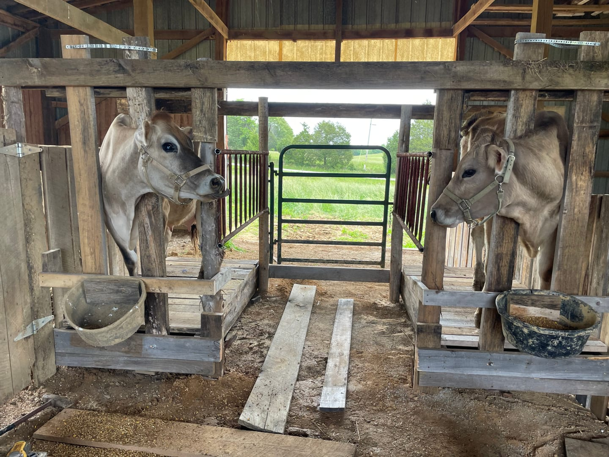
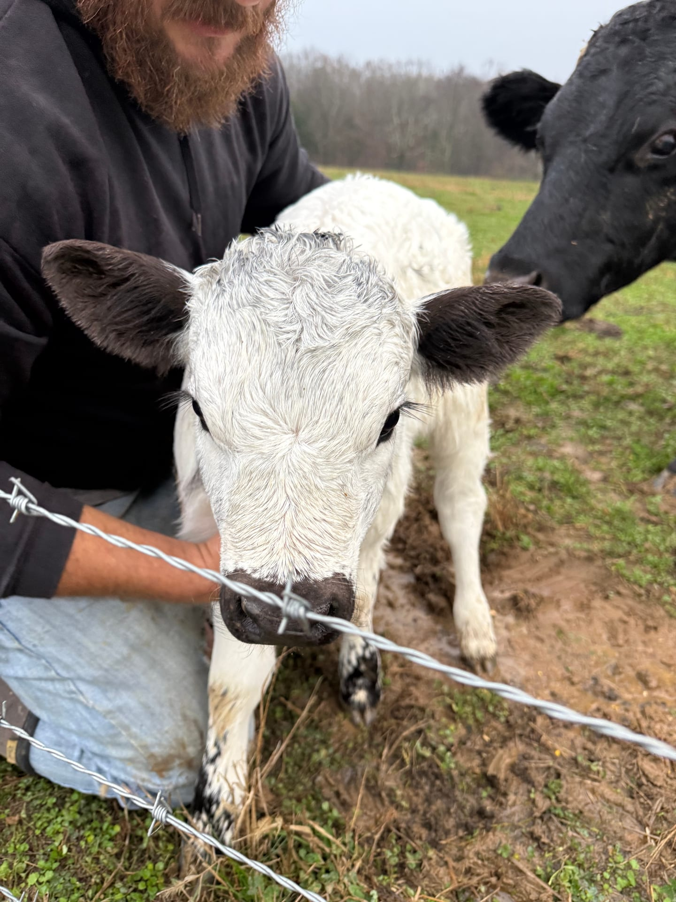
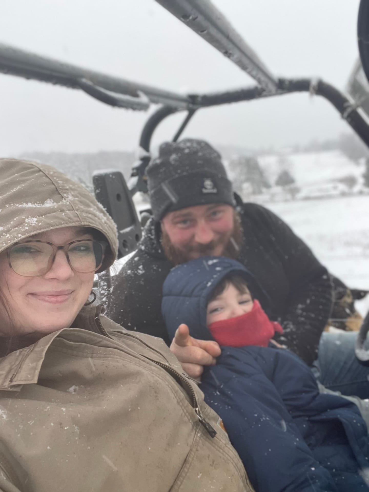
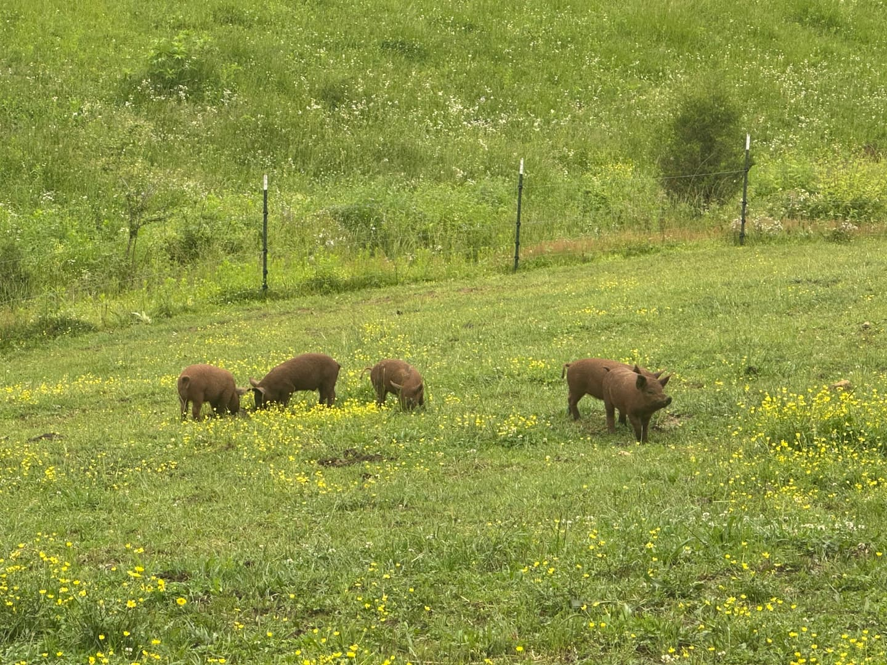
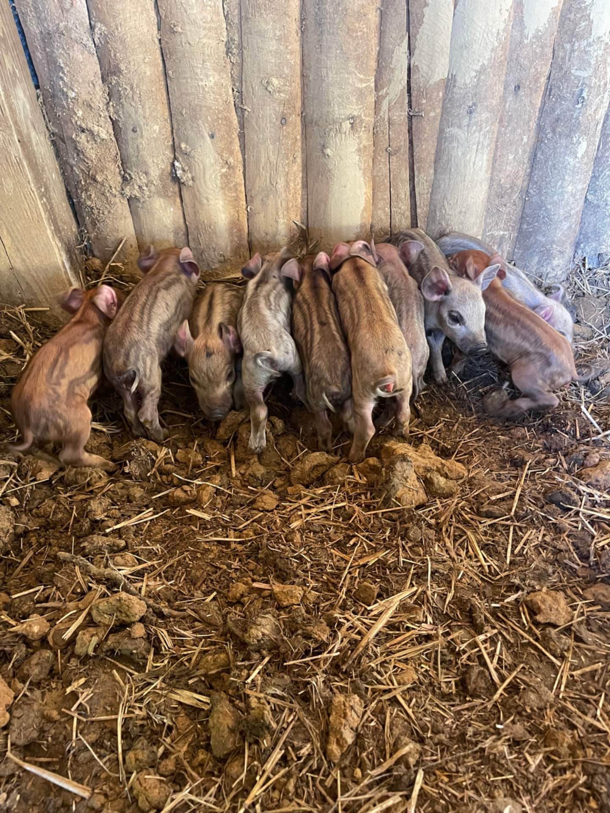

Open Pasture
Daily Chores The Herd
The Herd

Grayson County



Our Story
Long Branch Farms is a family operation in Grayson County, Kentucky, raising pasture-fed beef and pork for our neighbors across Western Central Kentucky.
Why We Started
Long Branch Farms was born out of a desire to provide our community with fresh, healthy, locally grown food. We wanted people in our area to know exactly what they're being fed and how it was raised, so they can trust what ends up on their table.
We're two working parents raising a six-year-old, running this farm alongside our full-time jobs since 2022. It's a lot to take on, but we believe doing things the right way is always worth the extra effort.
Everything we raise, we raise ourselves. Our pigs have access to pasture and woods and are fed milk from our own A2/A2 dairy cow, with feed we mix by hand every single day. Our beef is grass-finished from start to finish for a leaner, healthier cut. No antibiotics. No vaccines. No shortcuts. If we wouldn't feed it to our own family, it doesn't leave this farm.
We proudly serve Western Central Kentucky and are a member of Kentucky Proud, the state's program for locally grown and raised food.

Open Pasture
Daily Chores
The Herd

Grayson County


Bulk orders, bundle boxes, and individual cuts available. Inventory is limited and moves fast.